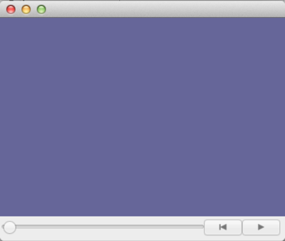

Let’s begin by creating the trep equivalent of “Hello World”.
Let us begin by importing the trep module into Python.
import trep
After importing trep if you type trep followed by pressing tab in IPython a list of all of the methods that are available for the trep module are displayed. As you can see that trep.System is listed, which instantiates an empty trep system. This is used in the next section.
>>> trep.
trep.CONST_SE3 trep.RZ trep.constraint trep.ryXRT
trep.Config trep.Spline trep.constraints trep.rz
trep.Constraint trep.System trep.finput trep.save_trajectory
trep.ConvergenceError trep.TX trep.force trep.spline
trep.Force trep.TY trep.forces trep.system
trep.Frame trep.TZ trep.frame trep.tapemeasure
trep.Input trep.TapeMeasure trep.load_trajectory trep.tx
trep.MidpointVI trep.WORLD trep.midpointvi trep.ty
trep.Potential trep.config trep.potential trep.tz
trep.RX trep.const_se3 trep.potentials trep.util
trep.RY trep.const_txyz trep.rx trep.visual
Let us create a new instance of a trep system.
system = trep.System()
This creates a new instance of a trep system. Typing system. followed by pressing tab will list all the methods and properties of the system object.
>>> system.
system.L system.get_frame
system.L_ddq system.get_input
system.L_ddqddq system.get_potential
system.L_ddqddqdq system.hold_structure_changes
system.L_ddqddqdqdq system.import_frames
system.L_ddqdq system.inputs
system.L_ddqdqdq system.kin_configs
system.L_ddqdqdqdq system.lambda_
system.L_dq system.lambda_dddk
system.L_dqdq system.lambda_dddkdq
system.L_dqdqdq system.lambda_ddq
system.add_structure_changed_func system.lambda_ddqddq
system.configs system.lambda_ddqdq
system.constraints system.lambda_dq
system.ddq system.lambda_dqdq
system.ddqd system.lambda_du
system.ddqk system.lambda_duddq
system.dq system.lambda_dudq
system.dqd system.lambda_dudu
system.dqk system.masses
system.dyn_configs system.nQ
system.export_frames system.nQd
system.f system.nQk
system.f_dddk system.nc
system.f_dddkdq system.nu
system.f_ddq system.potentials
system.f_ddqddq system.q
system.f_ddqdq system.qd
system.f_dq system.qk
system.f_dqdq system.resume_structure_changes
system.f_du system.satisfy_constraints
system.f_duddq system.set_state
system.f_dudq system.t
system.f_dudu system.test_derivative_ddq
system.forces system.test_derivative_dq
system.frames system.total_energy
system.get_config system.u
system.get_constraint system.world_frame
system.get_force
Some examples:
>>> system.t
0.0
>>> system.u
array([], dtype=float64)
>>> system.q
array([], dtype=float64)
All of the properties and methods for the system object are documented in the System documentation. We will explore more of these properties and methods later in the tutorial.
Let us visualize the system.
trep.visual.visualize_3d([ trep.visual.VisualItem3D(system, [], []) ])
Below is what you should see.
This brings up the trep visualization of the mechanical system. Since this system has no components nothing is shown. The VisualItem3D method takes in three arguments: system object, time vector, and configuration vector. In this example the time vector and configuration vector are set to empty vectors. If these vectors were not empty the visualization would play a movie of the system going through the configurations at the given times.
Below is the entire script used in this section of the tutorial.
1 2 3 4 5 6 7 8 | # trepHelloWorld.py
# Import the Trep module into python
import trep
# Create a new instance of a trep system
system = trep.System()
# Visualize the system with trep's visualization tools
trep.visual.visualize_3d([ trep.visual.VisualItem3D(system, [], []) ])
|